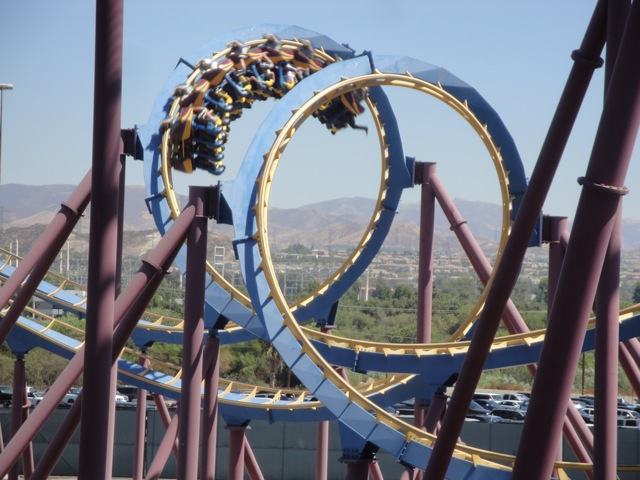

Labor Day SFMM 2010
First off, sorry about this update being so late. I've just been very busy lately. As you know, college is very time consuming. And I've also been working on the giant Middle America Update, which is also is very time consuming. So do the math and it'll come clear why these updates are so late. Anyways, we started off the day at Goliath, yet again.
 These morning marathons are starting to become an Incrediblecoasters tradition.
These morning marathons are starting to become an Incrediblecoasters tradition.
 Goliath was running really good today.
Goliath was running really good today.
Incrediblecoasters Takeover of Collosus!!
 Are you sure this is Labor Day Weekend?
Are you sure this is Labor Day Weekend?

Scream too, was running really great. (That seems to be the theme of the day.)
 Yup. We rode Batman and it was running really great.
Yup. We rode Batman and it was running really great.
Hmm. Looks like we're heading over to Wendys for lunch.
Nope. Today for lunch, we will be traveling to the Gas Station.
The Gas Station and all it's glory.
"I FOUND THE F*CKING TWINKIES!!!!!!"
Thanks to the Single Riders Line, we were able to get on Riddlers Revenge today.
 Unfortunetly, Riddlers Revenge broke the pattern of running great. The mid course brakes were extremely strong today. =(
Unfortunetly, Riddlers Revenge broke the pattern of running great. The mid course brakes were extremely strong today. =(
For the first time since 2007, we found a way to make soaking yourself on Tidal Wave's bridge even stupider.
Yeah. This takes the win for best Tidal Wave Soaking.
Well, the Handstand Soak passed the soaking test. But let's see if it can leave a good mark.
Yup. Now that's a good mark.
This is Red Blitz Vault. It's like Code Red Mtn Dew, only even more kickass. Dear Coke, please sell Red Blitz Vault in Grocery Stores. I'll buy it. From Incrediblecoasters.
"Hey Mr. Lizard. You want some of my Red Blitz Vault?"
Yeah, it had the SFMM Summer Effect where nobody was there in the morning, now in the afternoon, it's crowded.
Oh yeah. They put a clock in X2's station to time the ride operators to ensure that operations are great. This is a fantastic and I can name several parks that really benefit from this. *Cough* La Ronde and Mt. Olympus *Cough*
 Yeah. X2 always runs amazingly. See you at Fright Fest SFMM.
Yeah. X2 always runs amazingly. See you at Fright Fest SFMM.
Home